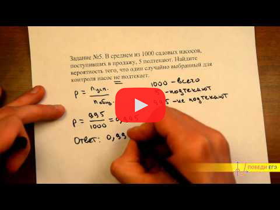

Простейшие уравнения

В этом задании нас просят решить уравнение. Здесь могут быть показательные, логарифмические, иррациональные, дробно-линейные и тригонометрические уравнения. В показательных и логарифмических, как правило, нужно привести левую и правую части уравнения к общему основанию, а затем приравнять аргументы. В иррациональных и дробно-линейных уравнениях важно проверить ОДЗ. А в тригонометрических в ответ нужно записать не решение в общем виде, а конкретную точку (например, наименьший целый положительный корень).